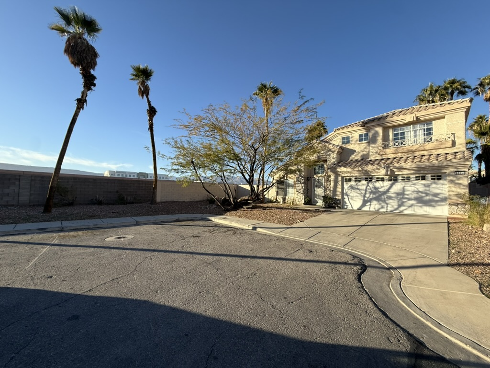

Living room
- “Alexa, turn on/off the stairwell.”
- “Alexa, turn on/off the chandelier.”
- “Alexa, turn on/off the arc light.”
ANFU STAY · LAS VEGAS
Make yourself at home. Here’s everything you need for a comfortable stay, from arrival to a relaxed goodbye.
Drive toward the end of Mangostone. The house will be on your right, with a large mesquite tree in front. You may park in the driveway or along the side of the house in the cul-de-sac, facing west.

Mangostone
Vegas2025
The Mangostone home is equipped with smart features. You’ll find two Amazon Echo devices: one in the living room above the yellow drawer, and another upstairs in the second-floor primary bedroom.
Just say, “Alexa, turn on the chandelier.” To switch it off, say, “Alexa, turn off the chandelier.” Use the same pattern for the controls below.
There are four ceiling fans: one in the living room and one in each bedroom.
Two HVAC systems serve the home, one per floor. Each is controlled by an Ecobee smart thermostat.
Before you leave, please:
No need to strip the beds or do any special cleaning. Have a safe trip, and thank you for staying at AnfuStay.